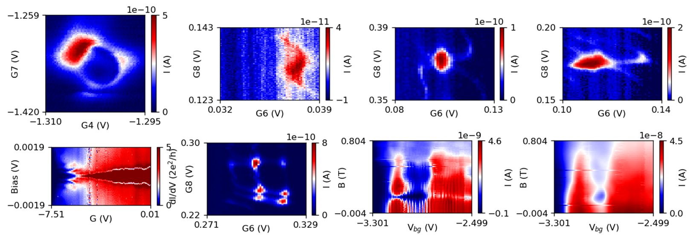

My GitHub profile page: 📄. The repo hosting this website: 🗃️. Pages are auto-generated by GitHub from MD and HTML files in the repo (where you can comment, report issues). Brief information about building the website can be found in this post.
The pictures below are physical signals playing in the park. What are they playing? They are playing a black hole ring 💍, a hurricane 🌀, a spider 🕷️, a turtle 🐢, and so on.
The characters at the bottom are random Chinese poems, got from here, to add some flavor of poetry.
